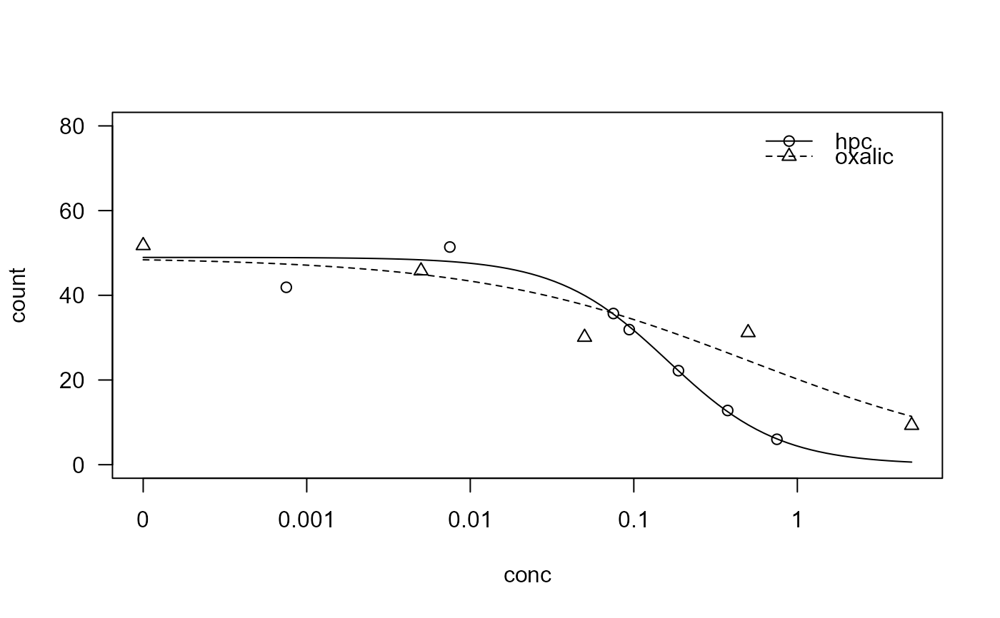

Performance of decontaminants used in the culturing of a micro-organism
decontaminants.RdThe two decontaminants 1-hexadecylpyridium chloride and oxalic acid were used. Additionally there was a control group (coded as concentration 0 and only included under oxalic acid).
Usage
data("decontaminants")Format
A data frame with 128 observations on the following 3 variables.
conca numeric vector of percentage weight per volume
counta numeric vector of numbers of M. bovis colonies at stationarity
groupa factor with levels
hpcandoxalicof the decontaminants used
Details
These data examplify Wadley's problem: counts where the maximum number is not known. The data were analyzed by Trajstman (1989) using a three-parameter logistic model and then re-analyzed by Morgan and Smith (1992) using a three-parameter Weibull type II model. In both cases the authors adjusted for overdispersion (in different ways).
It seems that Morgan and Smith (1992) fitted separate models for the two decontaminants and using the control group for both model fits. In the example below a joint model is fitted where the control group is used once to determine a shared upper limit at concentration 0.
Source
Trajstman, A. C. (1989) Indices for Comparing Decontaminants when Data Come from Dose-Response Survival and Contamination Experiments, Applied Statistics, 38, 481–494.
References
Morgan, B. J. T. and Smith, D. M. (1992) A Note on Wadley's Problem with Overdispersion, Applied Statistics, 41, 349–354.
Examples
library(drc)
## Wadley's problem using a three-parameter log-logistic model
decon.LL.3.1 <- drm(count~conc, group, data = decontaminants, fct = LL.3(),
type = "Poisson", pmodels = list(~group, ~1, ~group))
summary(decon.LL.3.1)
#>
#> Model fitted: Log-logistic (ED50 as parameter) with lower limit at 0 (3 parms)
#>
#> Parameter estimates:
#>
#> Estimate Std. Error t-value p-value
#> b:(Intercept) 1.271354 0.085497 14.8701 < 2.2e-16 ***
#> b:groupoxalic -0.749995 0.096745 -7.7523 9.065e-15 ***
#> d:(Intercept) 48.949356 1.162320 42.1135 < 2.2e-16 ***
#> e:(Intercept) 0.161718 0.011732 13.7844 < 2.2e-16 ***
#> e:groupoxalic 0.346414 0.109110 3.1749 0.001499 **
#> ---
#> Signif. codes: 0 '***' 0.001 '**' 0.01 '*' 0.05 '.' 0.1 ' ' 1
plot(decon.LL.3.1)

## Same model fit in another parameterization (no intercepts)
decon.LL.3.2 <- drm(count~conc, group, data = decontaminants, fct=LL.3(),
type = "Poisson", pmodels = list(~group-1, ~1, ~group-1))
summary(decon.LL.3.2)
#>
#> Model fitted: Log-logistic (ED50 as parameter) with lower limit at 0 (3 parms)
#>
#> Parameter estimates:
#>
#> Estimate Std. Error t-value p-value
#> b:grouphpc 1.271766 0.085523 14.8705 < 2.2e-16 ***
#> b:groupoxalic 0.521354 0.059869 8.7083 < 2.2e-16 ***
#> d:(Intercept) 48.953173 1.162656 42.1046 < 2.2e-16 ***
#> e:grouphpc 0.161766 0.011737 13.7825 < 2.2e-16 ***
#> e:groupoxalic 0.507902 0.113149 4.4888 7.162e-06 ***
#> ---
#> Signif. codes: 0 '***' 0.001 '**' 0.01 '*' 0.05 '.' 0.1 ' ' 1